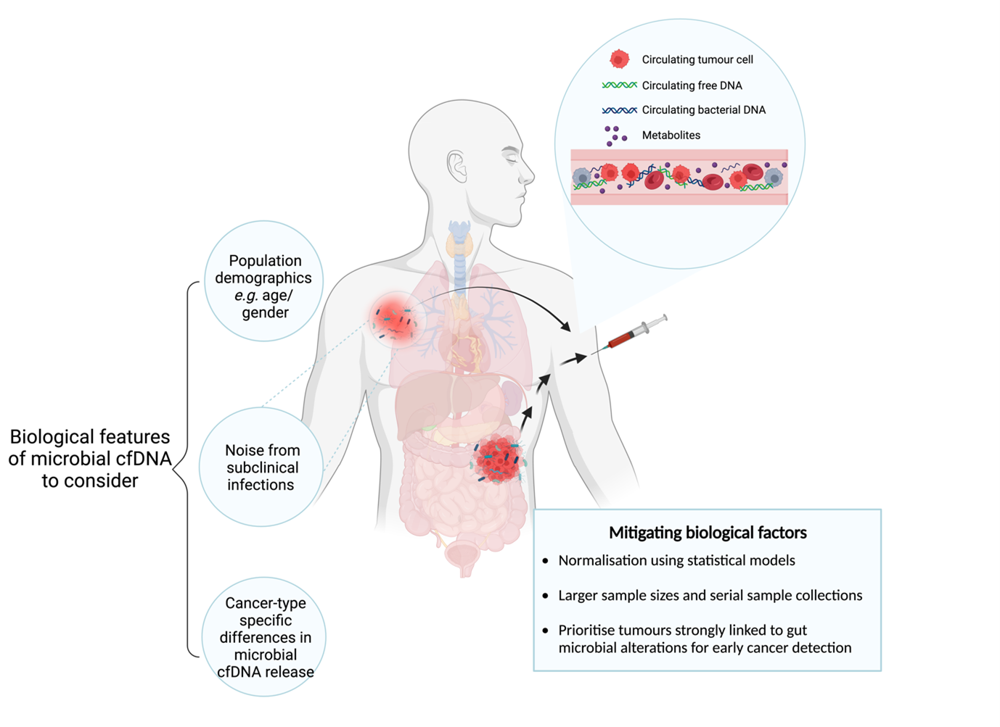

Collaborative research projects
Leveraging microial cell-free DNA for early cancer detection (Publication in press Trends in Cancer
Microbial cell-free DNA (microbial cfDNA) offers a minimally-invasive approach for profiling the microbiome.
Despite technical and biological challenges, microbial cfDNA’s potential for cancer detection is increasingly
evaluated using deeper sequencing,
novel laboratory approaches and computational methods. Targeting the microbiome using liquid biopsies could
enhance the sensitivity for early cancer detection.
